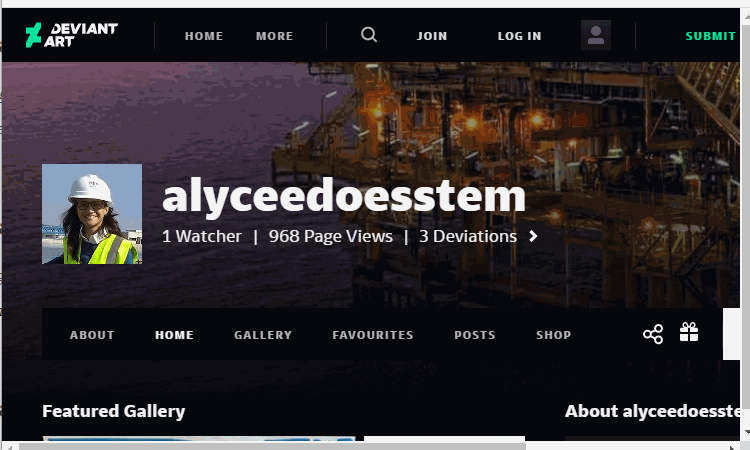

CYBAR PARTY CTF 2020
A couple of weeks ago, I stumbled upon an Open-Source Intelligence Capture-The-Flag competition arranged by CYBAR. It had been announced to be open for the entire world to compete against each other due to the ongoing pandemics travel restrictions. Since it was weekend and I have promised my self to not sit in front of the computer more then necessary, I first decided to just collect the challenges write-up and not compete. However, when the Saturday 6 of June came closer, I started to feel the hunger to compete. I decided to put a couple of hours between my girlfriends birthday party and a Sunday afternoon Frisbee golf event with some friends - what a perfect weekend. Hence, this is the write up of my first Open-Source Intelligence competition experience and results, let the battle begin!
Disclaimer
The content you see was created and used during a capture-the-flag competition. Hence what you see is fictional content of fake accounts and we are players who tried to find an answer for various questions created by the game developers. No information was collected that could harm any individual or company during this hours.
Tutorial Island
Description: Welcome to the CYBAR Open-Source Intelligence CTF. Most challenges can be solved with a browser and some know-how - online tools might help too. When you find something, whether it be a picture, text, code or whatnot, you can submit it into the CTF server by putting the 'flag format' around it. For example, if the flag asked you to find the name of a yellow fruit, and yo confirmed it was a banana, you'd submit "CYBAR{banana}". Don't worry too much about caps, it's not case-sensitive. To kick it off, let's try your first flag. You get into work, boot up your system and hit Spotify up. You can't remember the name of the artist or song you were listening to the other day but it put you in the ZONE. Scratching your head, you remember just a line of lyrics... "In the name of the Spam God, that's what's up" Huh. Let's do a quick search and see if we can find the artist, and submit as a flag. When done, you can kick off their playlist to pair with the CTF.
Walkthrough
This challenge required us to put quotes around the lyric text and ask Google Search to help us out identify the artist.

The flag was CYBAR{YTCracker}
Trojan Horse
Description: It's 12:57am. You get an SMS from your red team manager - "Hey, we have a situation... Call me.". Stepping out of bed and into the sleepy lights of the city, you tighten your hoodie and hit call. - "Hey. So a crime-stoppers report just came in, and apparently a passerby spotted a roomba trying to implant a consciousness into a... yeah this is going to sound weird... horse. Said something like 'the horse had a name on its side', but couldn't remember what. He said it was no more than 200m past the BP Petrol station in Mansfield, VIC on his way to Mt Buller. Located on the side of the road. Find the horse, find what name was on its coat. Once you've done that, we can put out an All-Points Bulletin for it." Find and submit the name on the horses' coat to notify local law enforcement in the area.
Walkthrough
This challenge required us to use Google Maps together with the Street View functionality to find a horse around 200 meter away from a BP Petrol station in Mansfield, Victoria on the road to Mt buller.

The flag was CYBAR{SWAGS}
Static on the Wire
Roombas everywhere are using social media to try and spread COVID propaganda about 5G infecting the public...basically saying people will start emitting Wi-Fi radiation. However, a new tactic has just hit our radar. We've just received reports of propaganda spreading through amateur radio. We're unsure of the call-sign, but the caller reported the following statement: "I was on the phone to my wife in Florence, Alabama. In the background of her HAM radio, I heard someone calling himself 'Scotty' in some weird-ass robotic voice, clamoring on about that 'demic giving everyone 5G and sorts." That's all we have to go off for now. Find the call-sign and submit it to us so we can start tracking down their home address. Flag format: CYBAR{x}
Walkthrough
This challenge required us to find a database that we could use to search for a person matching our description. The national association for amateur radio have a very useful FCC license data search function. I had to gusse that "Scotty" was a nickname for Scott.
The flag was CYBAR{KG4RFV}
Where in the world is Wuhan - Part 1
Description: Subject: Possible compromise - Facebook superadmin account Message: We've received an alert from CERT Australia of a possible superadmin compromise within Facebook's backend servers. As you know, they control a number of global node servers and if the roombas get access to pushing content....who knows what they might do. But we're currently looking at Roombas trying to learn the genetic structure and makeup of the novel coronavirus...from various supercookies tracking scientists browser history research. Of course, this can all be found out via the GraphQL API. Facebook being facebook, they're not providing any word at this point. However, combining this with the thousands of Federal Police ACORNS reports we've had in the past few days, it's possible. Let's start from the top. Find Mark Zuckerbergs email address and submit it into the portal; we'll run some automated checks to see if it's appeared in any 3rd party breach sites.
Walkthrough
This challenge required us to find a way to verify Mark Zuckerbergs email address. I first used Google Search to find databases or articles that could give away his potential email addresses. I then jumped to facebook and tried to see if that service could give me some sort of hint. To my surprise i hit an error message telling me that the password reset functionality was turned off. I have never seen this behaviour before and must be a clue that the account must have some sort of personal connection to facebook.
The flag was CYBAR{zuck@fb.com}
You've heard of elf on the shelf, but what about the proliferation of COVID-19?
Description: The Roombas are trying to gain the upper hand over the human population. We believe they're going to target pivotal industries such as real estate, critical infrastructure, information security and healthcare. We don't know who yet, but we know it's a group of close friends and all are infected with COVID-19. We need to enact Contact Tracing - finding every detail about their lives in order to predict and contain their movements. No one has heard from them since March. We must build up details about them for the agents to then take over. That's where you come in. Our first piece of intelligence is a gentleman by the name of Marc Hevis - a co-owner of Hevis Properties Pty Ltd. We have agents ready on the ground, and others covering all his other social media - your task is to find his Twitter account. Flag format: CYBAR{x} (No @ sign)
Walkthrough
This challenge was also very straight forward by using Google Search with Marc Hervis name in quotes.

The flag was CYBAR{HevisMarc}
By A Thread - Part 1
Description: Images in the background can reveal details such as email accounts. Those could be logged into to find sensitive information. This can be used to social engineer or extract secrets from unknowing accomplices. Challenge text: Alright, we need to start building up a profile of Marc's friend, Alycee. Find anything you can that might help us find more information on government databases about her such as an Australian Business Number (ABN). We managed to locate her tax agent on AirTasker - maybe you could get in touch and somehow convince him to provide some information about her tax return. https://www.airtasker.com/users/paul-n-19685038/ Public records show his email address is taxteamtechs@gmail.com Flag format: CYBAR{x x x}
Walkthrough
This challenge required us to get in touch with Paul. I tried to see what would happen if you just send an email to the identified address and just ask about the information.
The flag was CYBAR{546 877 954}
By A Thread - Part 2
Description: Can you locate Alycee's date of birth? Flag format: CYBAR{xx/xx/xxxx}
Walkthrough
This challenge required us to get in touch with Paul again. However this time we need to find the email and password combination before we send an email to Paul.
The flag was CYBAR{01/01/1989}
Contact Tracing - Part 1
Description: It's suspected the Roomba targeted one of Marc's friends, Alycee, with COVID19 based on her regular flights around the world to different critical infrastructure areas (e.g. gas and oil). We must undertake contact tracing for Alycee without warning the subject. We need to find out every location she has been in the past few years to get a profile. This profile will then help us predict and prevent where she might go next. What is the full URL of Alycee's art account? Flag format: CYBAR{https://www.x.x/x}
Walkthrough
This challenge required us to find Alycee deviantart. Let's try to see if she use the same username.
The flag was CYBAR{https://www.deviantart.com/alyceedoesstem}
Contact Tracing - Part 2
Description: We need more locations Alycee may have or will visit in the future. What is the exact volcano that Alycee visited? Flag format: CYBAR{x}
Walkthrough
This challenge required us to find the name of the vulcano Alycee visited or will visit in the future.
The flag was CYBAR{Kilauea}
Contact Tracing - Part 3
Description: We need more locations Alycee may have or will visit in the future. What is the first name of the park that Alycee likes to visit? Flag format: CYBAR{x}
Walkthrough
This challenge required us to find an address or coordinates in one of Alycee posts.
The flag was CYBAR{Wilson Botanic Park}
Contact Tracing - Part 4
Description: We are trying to locate in which suburb Alycee's friend Marcel lives in, to zone in on potential areas of risk he may potentially cause having COVID19. Please find it for us so that we can get some agents there on the ground. Flag format: CYBAR{x}
Walkthrough
This challenge required us to read carefully and experiement with different keywords in the conversations between Alycee and Marcel find to find the right article that Marcel is refering to.
The flag was CYBAR{Burwood}
Contact Tracing - Part 5
Description: We are trying to locate in which town Alycee's friend Pong lives in, to zone in on potential areas of risk he may potentially cause having COVID19. Flag format: CYBAR{x}
Walkthrough
This challenge required us to find a potential location for Alycee's friend Pong. Let's try his profile background image.
The flag was CYBAR{Blackall}
Contact Tracing - Part 6
Description: We've learned that Pong has a vehicle and may have visited nearby towns in the past few months. We were going to do license plate detection but no doubt the Roomba's have either changed this or prevented plate reads. We need to know the exact make and model car Pong is driving to get visual confirmation. Find the make and model of Pong's vehicle. Flag format: CYBAR{x x}
Walkthrough
This challenge required us to find out the speeding ticket location and the right car registry to find the vehicle model.
The flag was CYBAR{KIA Stinger}
Contact Tracing - Part 7
Description: Pong may have travelled international recently, and we need you to find out which city he was in. Flag format: CYBAR{x}
Walkthrough
This challenge required us to use the Google Image Search functionality again.
The flag was CYBAR{Colombo}
WFH (EoM) - Part 1
Description: Contact Tracing continues. We need to locate Marc's home and evacuate the neighborhood/building and place them in isolation. What's the name of the building Marc lives in? Flag format: CYBAR{x}
Walkthrough
This challenge required a lot of research and distance mapping with Google Maps.

The flag was CYBAR{QV1}
WFH (EoM) - Part 2
Description: We need more information on the building to work out the level it's being potentially filmed from. How many levels (above ground) does the building have? Flag format: CYBAR{x}
Walkthrough
This challenge required us to play around with keywords again in Google Search.
The flag was CYBAR{44}
Pretty Fly for a WiFi
Description: We need to find Marc's second office location (not the primary workplace) for the contract tracing. Business records tell us it's relatively new. Scour his Twitter account and see if there's anything that can help us geo-locate it. We don't need it down to the road, just the town (not suburb) and we can work from there. Flag format: CYBAR{x}
Walkthrough
This challenge required us to identify a database over WIFI hotspots and find out the location of the office.

The flag was CYBAR{ballarat}
Results
I only finished 17 out of 23 challenges and due to limited time i did not even start on most of the high scored challanges. I will do a write up about the other challenges after i have finished them. At least it was a great experience and a couple of new contacts.
Only 14 teams collected all points during the 24 hour period. I finished 75 out of 161 players, top 50%.
2020 06 08, 17:24, author: Marcus